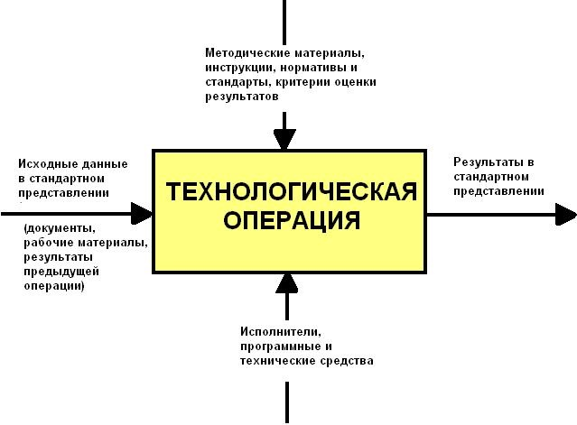
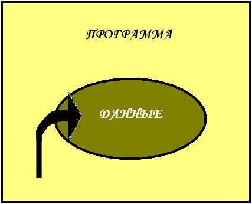
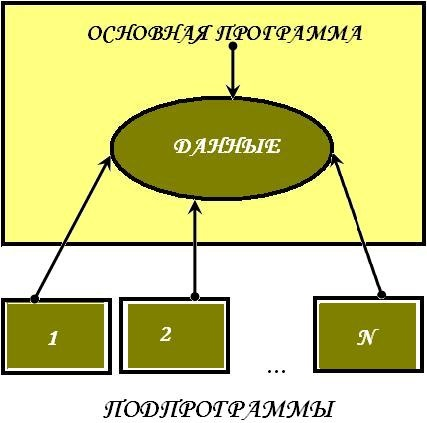
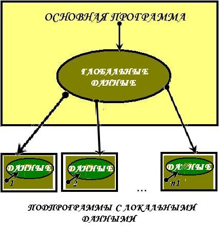
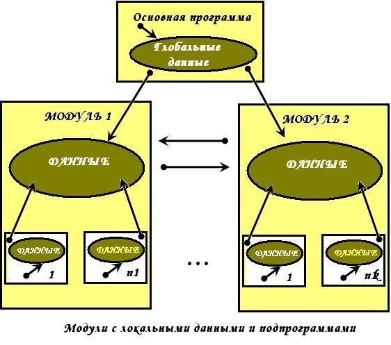
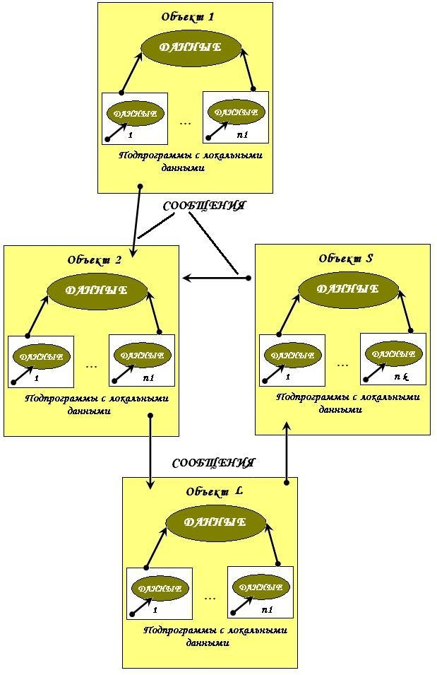
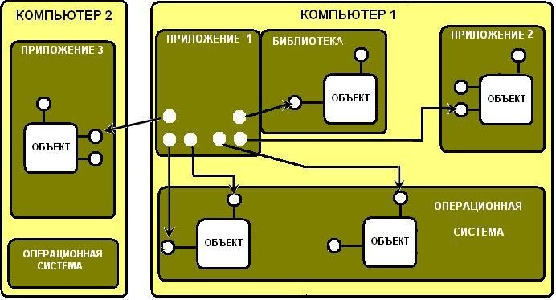

| Тема 3. Основы структурного программирования. Технология программирования и основные этапы ее развития | ||
| Назад | ||
|
Технологией программирования называют совокупность методов и средств, используемых в процессе разработки программного обеспечения. Как любая другая технология, технология программирования представляет собой набор технологических инструкций, включающих:
Кроме набора операций и их последовательности, технология также определяет способ описания проектируемой системы, точнее модели, используемой на конкретном этапе разработки.
 Рис. 1.1. Структура описания технологической операции Чтобы разобраться в существующих технологиях программирования и определить основные тенденции их развития, целесообразно рассматривать эти технологии в историческом контексте, выделяя основные этапы развития программирования, как науки. Первый этап - «стихийное» программирование. Этот этап охватывает период от момента появления первых вычислительных машин до середины 60-х годов XX в. В этот период практически отсутствовали сформулированные технологии, и программирование фактически было искусством. Первые программы имели простейшую структуру. Они состояли из собственно программы на машинном языке и обрабатываемых ею данных (рис. 1.2). Сложность программ в машинных кодах ограничивалась способностью программиста одновременно мысленно отслеживать последовательность выполняемых операций и местонахождение данных при программировании. Появление ассемблеров позволило вместо двоичных или 16-ричных кодов использовать символические имена данных и мнемоники кодов операций. В результате программы стали более «читаемыми». Создание языков программирования высокого уровня, таких, как FORTRAN и ALGOL, существенно упростило программирование вычислений, снизив уровень детализации операций. Это, в свою очередь, позволило увеличить сложность программ. Революционным было появление в языках средств, позволяющих оперировать подпрограммами.
 Рис.1.2. Структура первых программ. (Идея написания подпрограмм появилась гораздо раньше, но отсутствие средств поддержки в первых языковых средствах существенно снижало эффективность их применения.) Подпрограммы можно было сохранять и использовать в других программах. В результате были созданы огромные библиотеки расчетных и служебных подпрограмм, которые по мере надобности вызывались из разрабатываемой программы. Типичная программа того времени состояла из основной программы, области глобальных данных и набора подпрограмм (в основном библиотечных), выполняющих обработку всех данных или их части (рис. 1.3).
 Рис.1.3. Архитектура программы с глобальной областью данных. Слабым местом такой архитектуры было то, что при увеличении количества подпрограмм возрастала вероятность искажения части глобальных данных какой-либо подпрограммой. Например, подпрограмма поиска корней уравнения на заданном интервале по методу деления отрезка пополам меняет величину интервала. Если при выходе из подпрограммы не предусмотреть восстановления первоначального интервала, то в глобальной области окажется неверное значение интервала. Чтобы сократить количество таких ошибок, было предложено в подпрограммах размещать локальные данные (рис. 1.4).
 Рис.1.4. Архитектура программы, использующей подпрограммы с локальными данными. Сложность разрабатываемого программного обеспечения при использовании подпрограмм с локальными данными по-прежнему ограничивалась возможностью программиста отслеживать процессы обработки данных, но уже на новом уровне. Однако появление средств поддержки подпрограмм позволило осуществлять разработку программного обеспечения нескольким программистам параллельно. В начале 60-х годов XX в. разразился «кризис программирования». Он выражался в том, что фирмы, взявшиеся за разработку сложного программного обеспечения, такого, как операционные системы, срывали все сроки завершения проектов. Проект устаревал раньше, чем был готов к внедрению, увеличивалась его стоимость, и в результате многие проекты так никогда и не были завершены. Объективно все это было вызвано несовершенством технологии программирования. Прежде всего стихийно использовалась разработка «снизу-вверх» - подход, при котором вначале проектировали и реализовывали сравнительно простые подпрограммы, из которых затем пытались построить сложную программу. В отсутствии четких моделей описания подпрограмм и методов их проектирования создание каждой подпрограммы превращалось в непростую задачу, интерфейсы подпрограмм получались сложными, и при сборке программного продукта выявлялось большое количество ошибок согласования. Исправление таких ошибок, как правило, требовало серьезного изменения уже разработанных подпрограмм, что еще более осложняло ситуацию, так как при этом в программу часто вносились новые ошибки, которые также необходимо было исправлять... В конечном итоге процесс тестирования и отладки программ занимал более 80 % времени разработки, если вообще когда-нибудь заканчивался. На повестке дня самым серьезным образом стоял вопрос разработки технологии создания сложных программных продуктов, снижающей вероятность ошибок проектирования. Анализ причин возникновения большинства ошибок позволил сформулировать новый подход к программированию, который был назван «структурным». Второй этап - структурный подход к программированию (60-70-е годы XX в.). Структурный подход к программированию представляет собой совокупность рекомендуемых технологических приемов, охватывающих выполнение всех этапов разработки программного обеспечения. В основе структурного подхода лежит декомпозиция (разбиение на части) сложных систем с целью последующей реализации в виде отдельных небольших (до 40 - 50 операторов) подпрограмм. С появлением других принципов декомпозиции (объектного, логического и т. д.) данный способ получил название процедурной декомпозиции. В отличие от используемого ранее процедурного подхода к декомпозиции, структурный подход требовал представления задачи в виде иерархии подзадач простейшей структуры. Проектирование, таким образом, осуществлялось «сверху вниз» и подразумевало реализацию общей идеи, обеспечивая проработку интерфейсов подпрограмм. Одновременно вводились ограничения на конструкции алгоритмов, рекомендовались формальные модели их описания, а также специальный метод проектирования алгоритмов - метод пошаговой детализации. Поддержка принципов структурного программирования была заложена в основу так называемых процедурных языков программирования. Как правило, они включали основные «структурные» операторы передачи управления, поддерживали вложение подпрограмм, локализацию и ограничение области «видимости» данных. Среди наиболее известных языков этой группы стоит назвать PL/1, ALGOL-68, Pascal, С. Одновременно со структурным программированием появилось огромное количество языков, базирующихся на других концепциях, но большинство из них не выдержало конкуренции. Какие- то языки были просто забыты, идеи других были в дальнейшем использованы в следующих версиях развиваемых языков. Дальнейший рост сложности и размеров разрабатываемого программного обеспечения потребовал развития структурирования данных. Как следствие этого в языках появляется возможность определения пользовательских типов данных. Одновременно усилилось стремление разграничить доступ к глобальным данным программы, чтобы уменьшить количество ошибок, возникающих при работе с глобальными данными. В результате появилась и начала развиваться технология модульного программирования.
 Рис. 1.5. Архитектура программы, состоящей из модулей. Модульное программирование предполагает выделение групп подпрограмм, использующих одни и те же глобальные данные в отдельно компилируемые модули (библиотеки подпрограмм), например, модуль графических ресурсов, модуль подпрограмм вывода на принтер (рис. 1.5). Связи между модулями при использовании данной технологии осуществляются через специальный интерфейс, в то время как доступ к реализации модуля (телам подпрограмм и некоторым «внутренним» переменным) запрещен. Эту технологию поддерживают современные версии языков Pascal и С (C++), языки Ада и Modula. Использование модульного программирования существенно упростило разработку программного обеспечения несколькими программистами. Теперь каждый из них мог разрабатывать свои модули независимо, обеспечивая взаимодействие модулей через специально оговоренные межмодульные интерфейсы. Кроме того, модули в дальнейшем без изменений можно было использовать в других разработках, что повысило производительность труда программистов. Практика показала, что структурный подход в сочетании с модульным программированием позволяет получать достаточно надежные программы, размер которых не превышает 100 000 операторов . Узким местом модульного программирования является то, что ошибка в интерфейсе при вызове подпрограммы выявляется только при выполнении программы (из-за раздельной компиляции модулей обнаружить эти ошибки раньше невозможно). При увеличении размера программы обычно возрастает сложность межмодульных интерфейсов, и с некоторого момента предусмотреть взаимовлияние отдельных частей программы становится практически невозможно. Для разработки программного обеспечения большого объема было предложено использовать объектный подход. Третий этап - объектный подход к программированию (с середины 80-х до конца 90-х годов XX в.). Объектно-ориентированное программирование определяется как технология создания сложного программного обеспечения, основанная на представлении программы в виде совокупности объектов, каждый из которых является экземпляром определенного типа (класса), а классы образуют иерархию с наследованием свойств. Взаимодействие программных объектов в такой системе осуществляется путем передачи сообщений (рис. 1.6). Объектная структура программы впервые была использована в языке имитационного моделирования сложных систем Simula, появившемся еще в 60-х годах XX в. Естественный для языков моделирования способ представления программы (формализованные языки программрования) получил развитие в другом специализированном языке моделирования - языке Smalltalk (70-е годы XX в.), а затем был использован в новых версиях универсальных языков программирования, таких, как Pascal, C++, Modula, Java. Основным достоинством объектно-ориентированного программирования по сравнению с модульным программированием является «более естественная» декомпозиция программного обеспечения, которая существенно облегчает его разработку. Это приводит к более полной локализации данных и интегрированию их с подпрограммами обработки, что позволяет вести практически независимую разработку отдельных частей (объектов) программы. Кроме этого, объектный подход предлагает новые способы организации программ, основанные на механизмах наследования, полиморфизма, композиции, наполнения. Эти механизмы позволяют конструировать сложные объекты из сравнительно простых. В результате существенно увеличивается показатель повторного использования кодов и появляется возможность создания библиотек классов для различных применений. Бурное развитие технологий программирования, основанных на объектном подходе, позволило решить многие проблемы. Так были созданы среды, поддерживающие визуальное программирование, например, Delphi, C++ Builder, Visual C++ и т. д. При использовании визуальной среды у программиста появляется возможность проектировать некоторую часть, например, интерфейсы будущего продукта, с применением визуальных средств добавления и настройки специальных библиотечных компонентов. Результатом визуального проектирования является заготовка будущей программы, в которую уже внесены соответствующие коды. Использование объектного подхода имеет много преимуществ, однако его конкретная реализация в объектно-ориентированных языках программирования, таких, как Pascal и C++, имеет существенные недостатки:
Таким образом, при использовании этих языков программирования сохраняется зависимость модулей программного обеспечения от адресов экспортируемых полей и методов, а также структур и форматов данных. Эта зависимость объективна, так как модули должны взаимодействовать между собой, обращаясь к ресурсам друг друга. Связи модулей нельзя разорвать, но можно попробовать стандартизировать их взаимодействие, на чем и основан компонентный подход к программированию.
 Рис.1.6. Архитектура программы при объектно-ориентированном программировании. Четвертый этап - компонентный подход и CASE-технологии (с середины 90-х годов XX в. до нашего времени). Компонентный подход предполагает построение программного обеспечения из отдельных компонентов физически отдельно существующих частей программного обеспечения, которые взаимодействуют между собой через стандартизованные двоичные интерфейсы. В отличие от обычных объектов объекты-компоненты можно собрать в динамически вызываемые библиотеки или исполняемые файлы, распространять в двоичном виде (без исходных текстов) и использовать в любом языке программирования, поддерживающем соответствующую технологию. На сегодня рынок объектов стал реальностью, так в Интернете существуют узлы, предоставляющие большое количество компонентов, рекламой компонентов забиты журналы. Это позволяет программистам создавать продукты, хотя бы частично состоящие из повторно использованных частей, т.е. использовать технологию, хорошо зарекомендовавшую себя в области проектирования аппаратуры. Компонентный подход лежит в основе технологий, разработанных на базе COM (Component Object Model - компонентная модель объектов), и технологии создания распределенных приложений CORBA (Common Object Request Broker Architecture - общая архитектура с посредником обработки запросов объектов). Эти технологии используют сходные принципы и различаются лишь особенностями их реализации.
 Рис. 1.7. Взаимодействие программных компонентов различных типов. Технология СОМ фирмы Microsoft является развитием технологии OLE I (Object Linking and Embedding - связывание и внедрение объектов), которая использовалась в ранних версиях Windows для создания составных документов. Технология СОМ определяет общую парадигму взаимодействия программ любых типов:
Модификация СОМ, обеспечивающая передачу вызовов между компьютерами, называется DCOM (Distributed COM - распределенная СОМ). По технологии СОМ приложение предоставляет свои службы, используя специальные объекты - объекты СОМ, которые являются экземплярами классов СОМ. Объект СОМ так же, как обычный объект включает поля и методы, но в отличие от обычных объектов каждый объект СОМ может реализовывать несколько интерфейсов, обеспечивающих доступ к его полям и функциям. Это достигается за счет организации отдельной таблицы адресов методов для каждого интерфейса (по типу таблиц виртуальных методов). При этом интерфейс обычно объединяет несколько однотипных функций. Кроме того, классы СОМ поддерживают наследование интерфейсов, но не поддерживают наследования реализации, т. е. не наследуют код методов, хотя при необходимости объект класса-потомка может вызвать метод родителя. Каждый интерфейс имеет имя, начинающееся с символа «I» и глобальный уникальный идентификатор IID (Interface IDentifier). Любой объект СОМ обязательно реализует интерфейс Unknown (на схемах этот интерфейс всегда располагают сверху). Использование этого интерфейса позволяет получить доступ к остальным интерфейсам объекта. Объект всегда функционирует в составе сервера - динамической библиотеки или исполняемого файла, которые обеспечивают функционирование объекта. Различают три типа серверов:
Например, Microsoft Word является локальным сервером. Он включает множество объектов, которые могут использоваться другими приложениями. Для обращения к службам клиент должен получить указатель на соответствующий интерфейс. Перед первым обращением к объекту клиент посылает запрос к библиотеке СОМ, хранящей информацию обо всех, зарегистрированных в системе классах СОМ объектов, и передает ей имя класса, идентификатор интерфейса и тип сервера. Библиотека запускает необходимый сервер, создает требуемые объекты и возвращает указатели на объекты и интерфейсы. Получив указатели, клиент может вызывать необходимые функции объекта. Взаимодействие клиента и сервера обеспечивается базовыми механизмами СОМ или DCOM, поэтому клиенту безразлично местонахождение объекта. При использовании локальных и удаленных серверов в адресном пространстве клиента создается proxy-объект - заместитель объекта СОМ, а в адресном пространстве сервера СОМ - заглушка, соответствующая клиенту. Получив задание от клиента, заместитель упаковывает его параметры и, используя службы операционной системы, передает вызов заглушке. Заглушка распаковывает задание и передает его объекту СОМ. Результат возвращается клиенту в обратном порядке. На базе технологии СОМ и ее распределенной версии DCOM были разработаны компонентные технологии, решающие различные задачи разработки программного обеспечения. OLE-automation или просто Automation (автоматизация) — технология создания программируемых приложений, обеспечивающая программируемый доступ к внутренним службам этих приложений. Вводит понятие диспинтерфейса (dispinterface) - специального интерфейса, облегчающего вызов функций объекта. Эту технологию поддерживает, например, Microsoft Excel, предоставляя другим приложениям свои службы. ActiveX - технология, построенная на базе OLE-automation, предназначена для создания программного обеспечения как сосредоточенного на одном компьютере, так и распределенного в сети. Предполагает использование визуального программирования для создания компонентов - элементов управления ActiveX. Полученные таким образом элементы управления можно устанавливать на компьютер дистанционно с удаленного сервера, причем устанавливаемый код зависит от используемой операционной системы. Это позволяет применять элементы управления ActiveX в клиентских частях приложений Интернет. Основными преимуществами технологии ActiveX, обеспечивающими ей широкое распространение, являются:
MIDAS (Multitier Distributed Application Server - сервер многозвенных распределенных приложений) - технология, организующая доступ к данным разных компьютеров с учетом балансировки нагрузки сети. Все указанные технологии реализуют компонентный подход, заложенный в СОМ. Так, с точки зрения СОМ элемент управления ActiveX - внутренний сервер, поддерживающий технологию OLE-automation. Для программиста же элемент ActiveX - «черный ящик», обладающий свойствами, методами и событиями, который можно использовать как строительный блок при создании приложений. Технология CORBA, разработанная группой компаний ОМС (Object Management Group - группа внедрения объектной технологии программирования), реализует подход, аналогичный СОМ, на базе объектов и интерфейсов CORBA. Программное ядро CORBA реализовано для всех основных аппаратных и программных платформ и потому эту технологию можно использовать для создания распределенного программного обеспечения в гетерогенной (разнородной) вычислительной среде. Организация взаимодействия между объектами клиента и сервера в CORBA осуществляется с помощью специального посредника, названного VisioBroker, и другого специализированного программного обеспечения. Отличительной особенностью современного этапа развития технологии программирования, кроме изменения подхода, является создание и внедрение автоматизированных технологий разработки и сопровождения программного обеспечения, которые были названы CASE- технологиями (Computer-Aided Software/System Engineering - разработка программного обеспечения/программных систем с использованием компьютерной поддержки). Без средств автоматизации разработка достаточно сложного программного обеспечения на настоящий момент становится трудно осуществимой: память человека уже не в состоянии фиксировать все детали, которые необходимо учитывать при разработке программного обеспечения. На сегодня существуют CASE-технологии, поддерживающие как структурный, так и объектный (в том числе и компонентный) подходы к программированию. Появление нового подхода не означает, что отныне все программное обеспечение будет создаваться из программных компонентов, но анализ существующих проблем разработки сложного программного обеспечения показывает, что он будет применяться достаточно широко. |
||
| Конспект подготовлен Бакулиным А. М. 2022 год. | ||